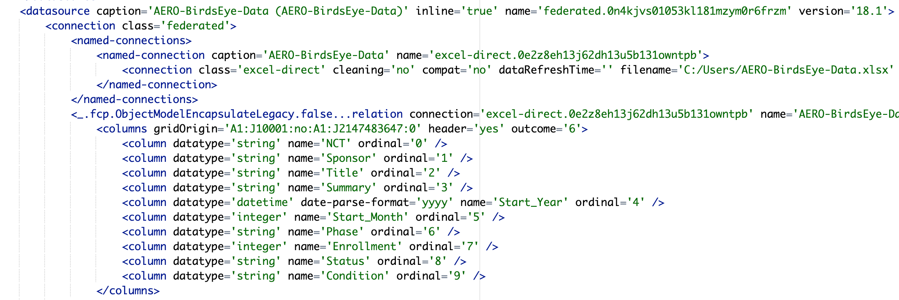
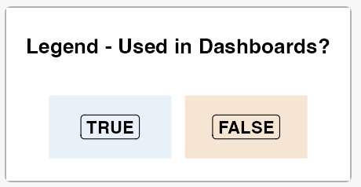
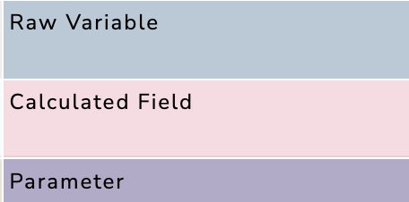
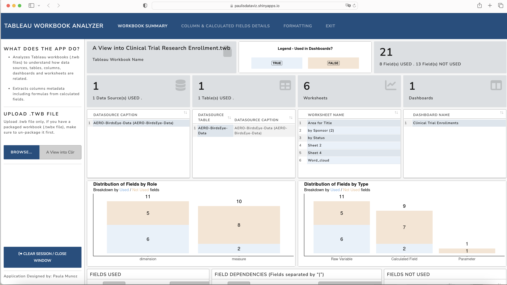
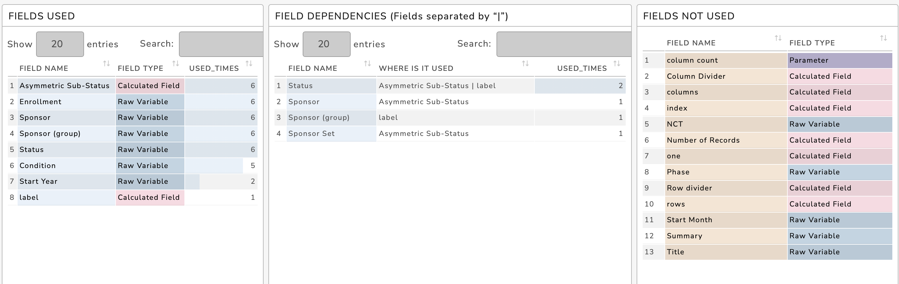
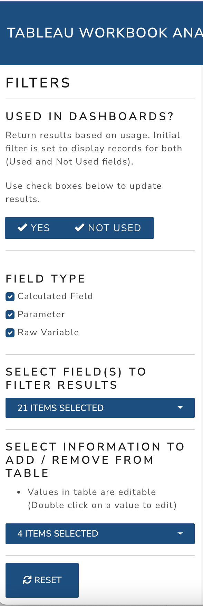
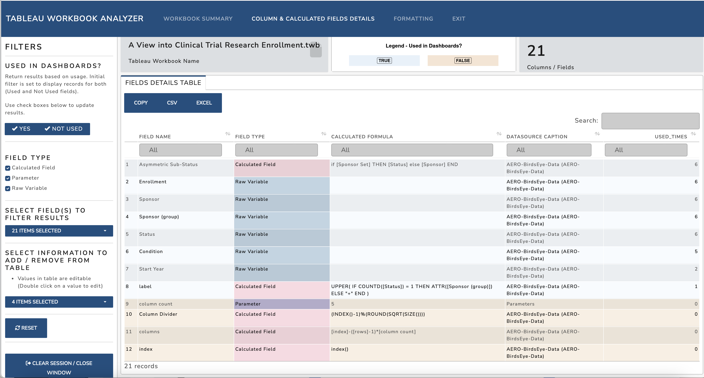
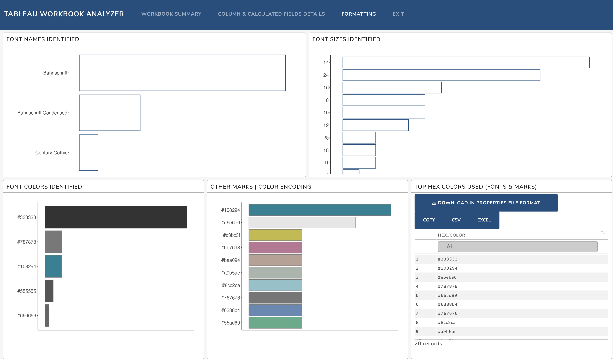
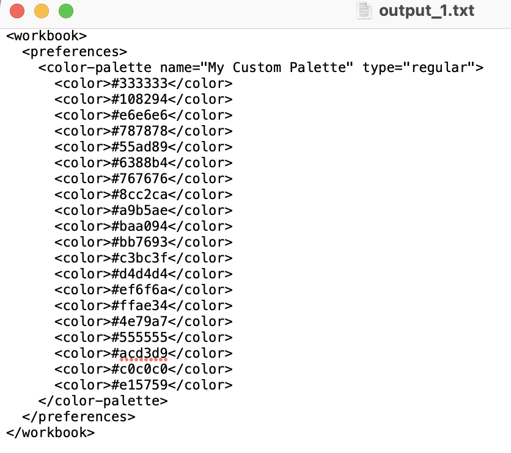

If you are a Tableau user or developer you may have found yourself in a situation where you need or would like to extract all formulas at once from all calculated fields to later find out there is no simple way to achieve this task. 😟
I have been in this situation several times, and after giving it some thought, I decided to build my own App and leverage the capabilities of Flexdashboard + Shiny in R.
This is the first app I have ever built, and I know it is not perfect, but I learned a lot and had so much fun along the way, but most importantly I know it would be very useful and hope you would think the same.
Without further ado let me introduce the:
Tableau Workbook Analyzer App

How does the App work?
Upload a .twb file
Wait for results to display (Some files may take longer to return results depending on how big the file is and how many attributes are getting analyzed).
A .twb file contains the Tableau workbook metadata in the form of structured XML tree, to develop this app I had to write some code to extract the relevant elements from the XML tree.
As mentioned before, the .twb only contains metadata information about the tableau workbook and it does NOT contain any actual data that was used in the workbook itself.

If you are wondering how I parsed and extracted the data, it was all done using the R library: xml2
The main steps in the process were:
Identify the parent nodes
Identify the attributes to extract
Save the results into data frames
Do some data wrangling / cleaning steps (impute NAs and keep unique values) to be able to make sense of data.
What Analysis / information is being returned by the App?
Initially I was mainly interested in retrieving calculated field formulas, but during the development process I got curious what other pieces of information could be retrieved that would help answer questions such as what fields are used or not used?, what are the Calculate Field dependecies and more.
Also during the final stages of the development process, I reached out to some close friends and members of the Tableau Community asking for feedback and they came back with some awesome ideas such as retrieving Color Palette information. Thank you datafam friends and #VizOfficeHours!
The app is organized into three primary tabs/sections:
I used the same legend throughout the App to represent objects that are used vs not used in dashboards.

Similarly, I used below colors to distinguish between Raw Variables, Calculated Fields and Parameters:

Below is at a high level the information found under each section. Click on each tab to learn more:
This section contains a summary of the workbook including:
Tableau Workbook Name
Total number of fields used vs not used
Data Sources, Worksheets and dashboards: Get a bird’s eye view of the name of the data sources, worksheets and dashboards powering your visuals.
Field Insights: Dive into fields used, unused, their frequencies, and dependencies. Understand the role of dimensions, measures, raw variables, calculated fields, and parameters.
Unused Fields: Because sometimes, we all have leftovers.

Workbook Summary - Bottom Section
Used Fields list: List detailing field names, frequencies, and field type.
Calculated Field Dependencies list: Discover which fields contribute to each Calculated Field.
Unused Fields list: List of unused fields with their field type.

I would think this section contains the most interesting information… It has all the deatils about the columns / fields.
First of all, the side panel has various filters:
|
 |
As far as the Details table:
Fields Detail table - Contains all relevant information about columns/ fields.
Select information to be added/ remove to table using filter menu on sidebar
Table is editable (double click on a value and edit)
Search values across tables (This would work like a filter)
Copy table to clipboard or export table to CSV or EXCEL

Last but not least, the formatting tab displays some formatting attributes found in the workbook and they are sorted by most to least used.
Font Names
Font Sizes
Font Colors
Mark Colors
Consolidated list of to 20 hex colors used - Similar to other tables in the App, this table can be edited, searched on and copied/ exported, but most importantly you could also download the list of hex codes in the format required to update the preferences.tps file and create your custom palette.

Exporting Hex codes in the format needed under the preferences.tps file:

Where is the App hosted?
The App is hosted at Shinyapps.io.
Shinyapps.io is a platform for hosting Shiny web applications. To learn more about Shinnyapss.io Click here!
App can be tested here!
I would recommend to only use the App hosted online at Shinyapps.io for your personal projects only, and avoid uploading any .twb file that may contain any confidential / work related tableau workbook information.
If you are interested in running this app locally in your computer /server, please reach out to me, and I can give you access to the source code (Pre-requisite would be to have R and RStudio installed).
The app is hosted under Shinyapps.io Free tier service, and availability of the App is dependent on how many active hours the app has been running in a given month.
About Security and Storage
A .twb file only contains metadata about the Tableau workbook and it does not contain the actual data used in the workbook itself.
The .twb file uploaded to the App is encrypted with HTTPS.
The App is not writing the data to a persistent data store, which means the data uploaded to the app is lost once the application goes into iddle state, and to facilitate this I have added buttons across the different tabs to clear the session and close the window.
Having that said, I would recommend to only use the App hosted online at Shinyapps.io for your personal projects only, and avoid uploading any .twb file that may contain any confidential / work related tableau workbook information.
If you are interested in running this app locally in your computer /server, please reach out to me, and I can give you access to the source code (Pre-requisite would be to have R and RStudio installed).
For more information about Security and Storage in Shinyapps.io, I have extracted below from Posit and shinnyapps.io websites:
“Posit is a data processor with respect to data processed by Posit Cloud Services, including posit.cloud and shinyapps.io. Posit maintains appropriate technical and organizational security measures designed to protect the security, confidentiality, integrity and availability of data processed by Posit Cloud Services. All communication between customers and Posit Cloud Services is encrypted with HTTPS. Within Posit Cloud Services, data at-rest is also encrypted.” read more here
“Each application deployed to shinyapps.io creates storage in its own private file system when the application starts to run. The application only has access to the data that was uploaded with the application at the time of deployment.”
“The storage will be persistent while the application is in the Running state. After the idle timeout is reached, the application will be put into a Sleeping state, and any changes to the file system will be lost.”
“If your shiny application collects information that you would like to have persisted, you will need to write the data to a persistent data store (e.g., databases, Dropbox, Google Sheets, S3 etc.)” shinyapps.io documentation
Ready to test App, click here!
I would recommend to only use the App hosted online at Shinyapps.io for your personal projects only, and avoid uploading any .twb file that may contain any confidential / work related tableau workbook information.
If you are interested in running this app locally in your computer /server, please reach out to me, and I can give you access to the source code (Pre-requisite would be to have R and RStudio installed).